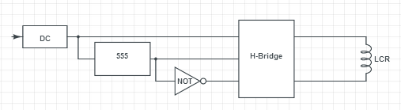

Wireless Charging
The original plan for the wireless charger was to build it from scratch, experimenting with configurations to maximize efficiency. Transmitter and receiver coils were custom selected and purchased. The final result of the development can be viewed in this video.
Wireless charging using a transceiver from Adafruit. The received power is boosted to 5V for USB battery.
Power is transmitted from the charging station to the robot using wireless inductive charging. A coil on the charging station is inductively coupled with a coil on the robot. Power is transferred when the transmitter is given a square wave. The AC current inside the transmitter produces an oscillating magnetic field. This magnetic field induces AC current in the receiver coil.

An H-bridge was used to produce the driving signal. The H-bridge received four timing signals, which were square waves identical in amplitude and frequency, each offset by 90 degrees in phase. In the development phase, these timing signals came from a function generator in combination with a hex inverter. The LCR circuit powered by the power inverter was tuned so that the transmitter resonant frequency was matched to that of the receiver LCR circuit, in order to minimize losses.
On the robot, a voltage is induced in the receiving coil because of the oscillating magnetic field from the transmitter coil. The receiving LCR circuit was also tuned to ensure that the resonant frequencies were matched. Because the output of the receiver coil is AC, the output is rectified and filtered into DC power, which is fed into a boost converter, and then a USB battery charger.
An early prototype of the wireless charger demonstrating how the recevied power can be rectified and filtered into a DC voltage using a full-bridge rectifier and capacitor.
In order to prevent the Arduino from trying to draw power from the batteries while they are being charged, we attached a button to the bottom of the robot and connected it to the gate of a p-channel MOSFET. The MOSFET is connected between the battery pack and the boost converter that powers the Arduino. When the robot docks, the button is pressed and a voltage is applied to the gate of the MOSFET, cutting off the connection between the batteries and the Arduino.